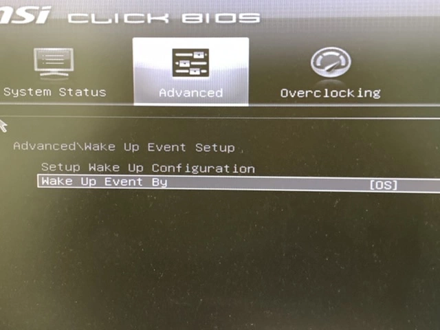

停電が計画されていたりすると、停電復帰後に指定した時刻で起動しておきたい、なんてことがあります。
事前準備
BIOSを設定する
BIOSでwakeupの設定をOSからできるようにしておく

確認
$ sudo grep -i rtc /var/log/kern.log
Sep 17 09:16:22 ds9 kernel: [ 0.533310] rtc_cmos 00:07: RTC can wake from S4
Sep 17 09:16:22 ds9 kernel: [ 0.533686] rtc_cmos 00:07: rtc core: registered rtc_cmos as rtc0
Sep 17 09:16:22 ds9 kernel: [ 0.533765] rtc_cmos 00:07: alarms up to one month, y3k, 242 bytes nvram, hpet irqs
Sep 17 09:16:22 ds9 kernel: [ 0.536699] rtc_cmos 00:07: setting system clock to 2020-09-17 00:16:19 UTC (1600301779)
S4になってればいいらしい
起動時刻を設定する
初期状態
$ cat /proc/driver/rtc
rtc_time : 01:54:00
rtc_date : 2020-09-18
alrm_time : 01:52:00
alrm_date : 2020-09-19
alarm_IRQ : no
alrm_pending : no
update IRQ enabled : no
periodic IRQ enabled : no
periodic IRQ frequency : 1024
max user IRQ frequency : 64
24hr : yes
periodic_IRQ : no
update_IRQ : no
HPET_emulated : yes
BCD : yes
DST_enable : no
periodic_freq : 1024
batt_status : okay
起動時刻を設定
$ sudo su -c 'date "+%s" -d "2020/09/18 10:56:00 JST" > /sys/class/rtc/rtc0/wakealarm'
設定後、RTCのalrmが設定されてればOK
$ cat /proc/driver/rtc
rtc_time : 01:54:20
rtc_date : 2020-09-18
alrm_time : 01:56:00
alrm_date : 2020-09-18
alarm_IRQ : yes
alrm_pending : no
update IRQ enabled : no
periodic IRQ enabled : no
periodic IRQ frequency : 1024
max user IRQ frequency : 64
24hr : yes
periodic_IRQ : no
update_IRQ : no
HPET_emulated : yes
BCD : yes
DST_enable : no
periodic_freq : 1024
batt_status : okay
おまけ
自動シャットダウン
$ sudo shutdown -h 21:00